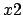
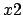

Next: 3.5.1 Speed Issues Up: 3. Extensions of Gnuplot's Previous: 3.4.3 Gridlines Contents Index
Gnuplot has a plotting mode called ``multiplot'' which allows many graphs to be plotted together, and display side-by-side. The basic syntax of this mode is reproduced in Pyxplot, but is hugely extended.
The mode is entered by the command ``set multiplot''. This can be compared
to taking a blank sheet of paper on which to place plots. Plots are then placed
on that sheet of paper, as usual, with the plot command. The position
of each plot is set using the set origin command, which takes a
comma-separated coordinate pair, measured in centimetres. The following,
for example, would plot a graph of  to the left of a plot of
:
to the left of a plot of
:
set multiplot plot sin(x) set origin 10,0 plot cos(x)
The multiplot page may subsequently be cleared with the clear command, and multiplot mode may be left using the ``set nomultiplot'' command.
At this point we move beyond the syntax available in gnuplot. Each time a plot is placed on the multiplot page in Pyxplot, it is allocated a reference number, which is output to the terminal. Reference numbers count up from zero each time the multiplot page is cleared. A number of commands exist for modifying plots after they have been placed on the page, selecting them by making reference to their reference numbers.
Plots may be removed from the page with the delete command, and restored with the undelete command:
delete <number> undelete <number>
The reference numbers of deleted plots are not reused until the page is cleared, as they may always be restored with the undelete command; plots which have been deleted simply do not appear.
Plots may also be moved with the move command. For example, the following would move plot 23 to position (8,8) measured in centimetres:
move 23 8,8
The axes of plots can be linked together, in such a way that they always share a common scale. This can be useful when placing plots next to one another, firstly, of course, if it is of intrinsic interest to ensure that they are on a common scale, but also because the two plots then do not both need their own axis labels, and space can be saved by one sharing the labels from the other. In Pyxplot, an axis which borrows its scale and labels from another is called a ``linked axis''.
Such axes are declared by setting the label of the linked axis to a magic
string such as ``linkaxis 0''. This magic label would set the axis to borrow
its scale from an axis from plot zero. The general syntax is
``linkaxis  '', where
'', where  and are two integers, separated by
a comma or whitespace. The first,
and are two integers, separated by
a comma or whitespace. The first,  , indicates the plot from which to borrow
an axis; the second, , indicates whether to borrow the scale of axis ,
, , etc. By default, . The linking will fail, and a warning
result, if an attempt is made to link to an axis which doesn't exist.
, indicates the plot from which to borrow
an axis; the second, , indicates whether to borrow the scale of axis ,
, , etc. By default, . The linking will fail, and a warning
result, if an attempt is made to link to an axis which doesn't exist.
The specimen plots in section 5.12 show numerous examples of the use of linked axes.
In multiplot mode, the replot command can be used to modify the last plot added to the page. For example, the following would change the title of the latest plot to ``foo'', and add a plot of to it:
set title 'foo' replot cos(x)
Additionally, it is possible to modify any plot on the page, by first selecting it with the edit command. Subsequently, the replot will act upon the selected plot. The following example would produce two plots, and then change the colour of the text on the first:
set multiplot plot sin(x) set origin 10,0 plot cos(x) edit 0 # Select the first plot ... set textcolour red replot # ... and replot it.
The edit command can also be used to view the settings which are applied to any plot on the multiplot page - after executing ``edit 0'', the show command will show the settings applied to plot zero.
When a new plot is added to the page, replot always switches to act upon this most recent plot.
In addition to placing plots on the multiplot page, text labels may also be inserted independently of any plots, using the text command. This has the following syntax:
text 'This is some text' x,y
In this case, the string ``This is some text'' would be rendered at position on the multiplot. The commands set textcolour, set texthalign and set textvalign, which have already been described in the context in the set label command, can also be used to set the colour and alignment of text produced with the text command.. A useful application of this is to produce centred headings at the top of multiplots.
As with plots, each text item has a unique identification number, and can be moved around, deleted or undeleted:
delete_text <number> undelete_text <number> move_text <number> x,y
It should be noted that the text command can also be used outside of the multiplot environment, to render a single piece of short text instead of a graph. This has limited applications, but one is illustrated in section 5.4.
Arrows may also be placed on multiplot pages, independently of any plots, using the arrow command, which has syntax:
arrow from x,y to x,y
As above, arrows receive unique identification numbers, and can be deleted and undeleted, though they cannot be moved:
delete_arrow <number> undelete_arrow <number>
The arrow command may be followed by the `with' keyword to specify to style of the arrow. The style keywords which are accepted are identical to those accepted by the set arrow command (see section 3.4.1). For example:
arrow from x1,y1 to x2,y2 \ with twohead colour red
The refresh command is rather similar to the replot command, but produces an exact copy of the latest display. This can be useful, for example, after changing the terminal type, to produce a second copy of a multiplot page in a different format. But the crucial difference between this command and replot is that it doesn't replot anything. Indeed, there could be only textual items and arrows on the present multiplot page, and no graphs to replot.